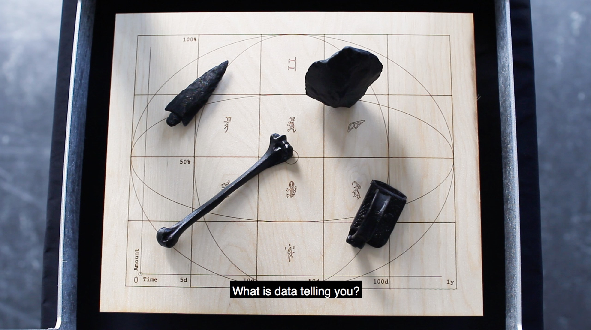
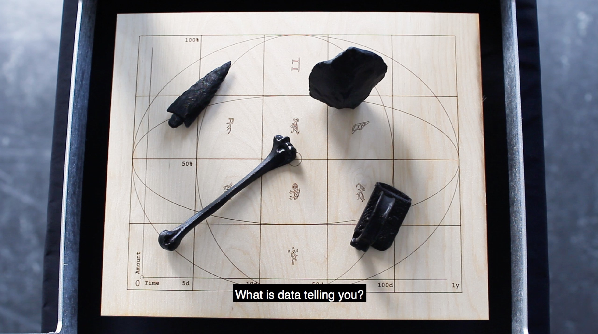

2019ALGORITHMIC FAITH
INSTALLATION RESEARCH COMPUTATIONAL PREDICTIONS
What is the relationship between us and algorithmically generated truths?
Is there a degree of agency we can manifest in the process of interpreting them?
Algorithmic Faith is an explorative project that creates a parallel between fortune telling methods and computational predictions.
The ways that algorithmic models produce outcomes are barely knowable for us, operating like opaque blackboxes where the inputs and
outputs can be visible, but the process that takes place between them remains impenetrable.
Computational predictions are methods that process data (from the past) to project it into the future, therefore creating forecasts that
we rely on, but which we cannot grasp completely.
Relying on such projections puts us in a position of blind trust towards the mechanisms that produce them.
Data becomes the omen that contains information about our future, as algorithmic predictions interpret it to give us a response.
Following the same sequence of events, can we replace the algorithm and interpret data given to us?
Can we become the fortune-telling Oracle instead of the mysterious computational blackbox?
 
